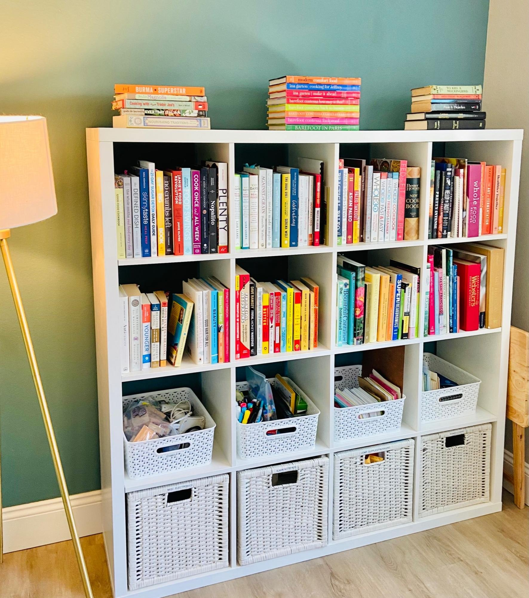

The Productivity Prescription: A Comprehensive Guide to Organizing Your Office
An organized office is the foundation of productivity, efficiency, and success. Whether you work from a dedicated home office or a corporate workspace, implementing effective organization strategies can significantly improve your focus, reduce stress, and enhance your overall work experience. In this article, we will provide you with a step-by-step guide to organizing your office and creating an environment conducive to productivity and creativity.
Step 1: Clear the Clutter The first step in organizing any office is decluttering. Remove all unnecessary items from your workspace, including old documents, broken equipment, and expired supplies. Sort through your papers and files, digitize or dispose of what you no longer need, and create a system for organizing important documents.

Step 2: Assess and Categorize
Evaluate the items you need to keep in your office and categorize them. Group similar items together, such as office supplies, reference materials, technology, and personal items. This process helps you visualize the storage needs for each category and enables you to plan for appropriate organization solutions.
Step 3: Create Functional Zones
Divide your office into functional zones based on the activities you perform. Designate areas for tasks such as computer work, meetings, storage, and relaxation. Arrange your furniture and equipment accordingly to maximize workflow and ensure a smooth transition between tasks.
Step 4: Optimize Desk Space Your desk is the central hub of your office. Keep it clutter-free and organized to boost productivity. Utilize desk organizers for frequently used items such as pens, notepads, and sticky notes. Minimize distractions by keeping only essential items within reach and storing other items in drawers or nearby storage solutions.
Step 5: Embrace Digital Organization:
In today's digital age, organizing your office extends beyond physical clutter. Implement digital organization systems to manage emails, documents, and files. Create folders and subfolders on your computer to categorize files logically. Use productivity apps and cloud storage solutions to streamline collaboration and access important information from anywhere. Check out our other blog on more tips to get digitally organized.
Step 6: Invest in Storage Solutions Invest in storage solutions that suit your needs and space constraints. Shelving units, filing cabinets, and drawer organizers are excellent options for storing paperwork, office supplies, and other items. Clear storage boxes or labeled bins can help keep your office tidy while ensuring easy access to stored items.
Step 7: Label and Color-Code Labels and color-coding are invaluable tools for maintaining an organized office. Label drawers, cabinets, and boxes to identify the contents and save time searching for items. Use color-coded folders or labels for different categories of documents or projects. This visual organization system enhances efficiency and minimizes the chance of misplacing important information.
Step 8: Maintain a Cleaning Routine Organizing your office is an ongoing process. Establish a regular cleaning routine to maintain order and cleanliness. Dedicate time each week to declutter your desk, file documents, and wipe down surfaces. A clean and organized office promotes focus, creativity, and a sense of professionalism.
Organizing your office is a transformative process that positively impacts your productivity and overall work experience. By following the step-by-step guide provided in this article, you can create an organized and efficient workspace that supports your goals and reduces stress. Remember to declutter regularly, create functional zones, optimize your desk space, embrace digital organization, and invest in appropriate storage solutions. A well-organized office sets the stage for success and empowers you to do your best work. So, roll up your sleeves, implement these strategies, and unlock the full potential of your workspace.
Learn more about our process